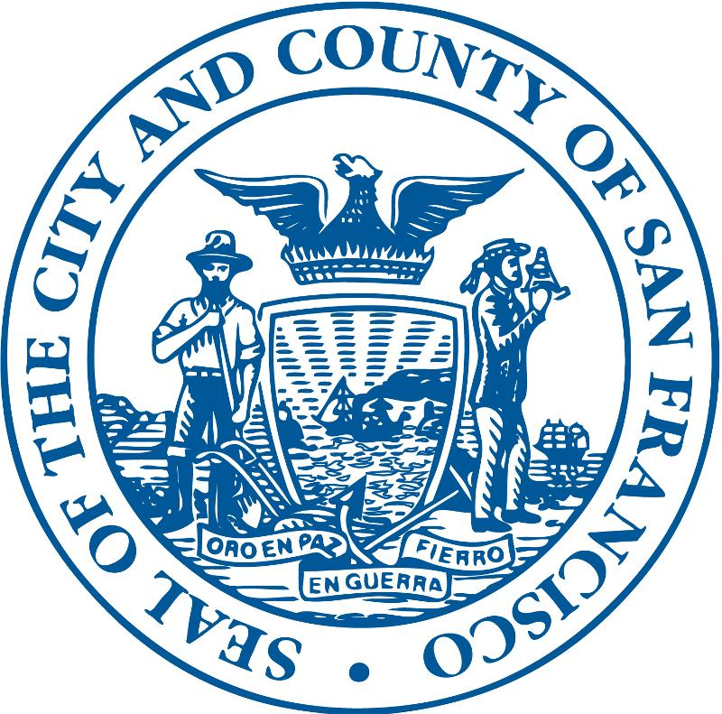
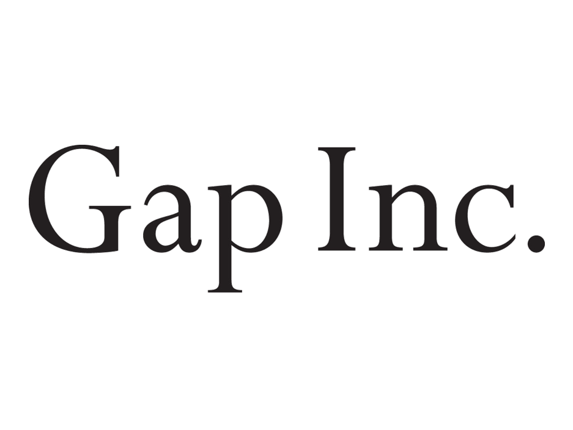

Quality assurance is kind of self explanatory. It is the assurance of the quality of all the materials, structures, and systems at every stage of the process until delivery or production of any type of product or project. In the tech industry, software testing and quality assurance is a big part of any process. This is because one mistake, or bug, in the software can cost multiple damages and money, not only to the customers, but the company itself. Quality Assurance is a must because it is involved throughout the entire process and in software testing, testers are constantly looking for errors of how the software or app is responding.
So far, in our QA class at Year Up we have learned about what a specification, or spec, is about a product or software. We also learned about 5 different types of bugs that we may find in the spec. The 5 kinds of bugs would be:
Another thing that we have learned in the QA class is what is Black Box, White Box, Static, and Dynamic Testing. Here is a more helpful visual of what it is:
| Black Box | White Box | |
| Static | Don't know what you're testing when the product is not running | Knowing what you're testing when the product is not running |
| Dynamic | Don't know what you're testing when the product is running | Knowing what you're testing when it is running |
Now here is an example
| Example | Black Box | White Box |
| Static | Testing the Spec | Reading the Code |
| Dynamic | Testing the Program | Running and inspecting the Code |
As of today, the corporate partners Year Up Bay Area provide students with internships, in regards to QA are:
| Bank of the West | City and County of San Francisco  |
Gap Inc.  | GE | Paypal  |
| Salesforce | Splunk | UCSF |
Workday  |
Macys.com  |